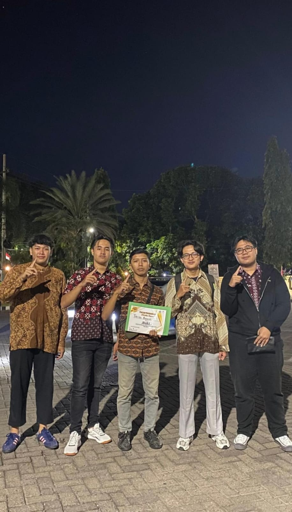
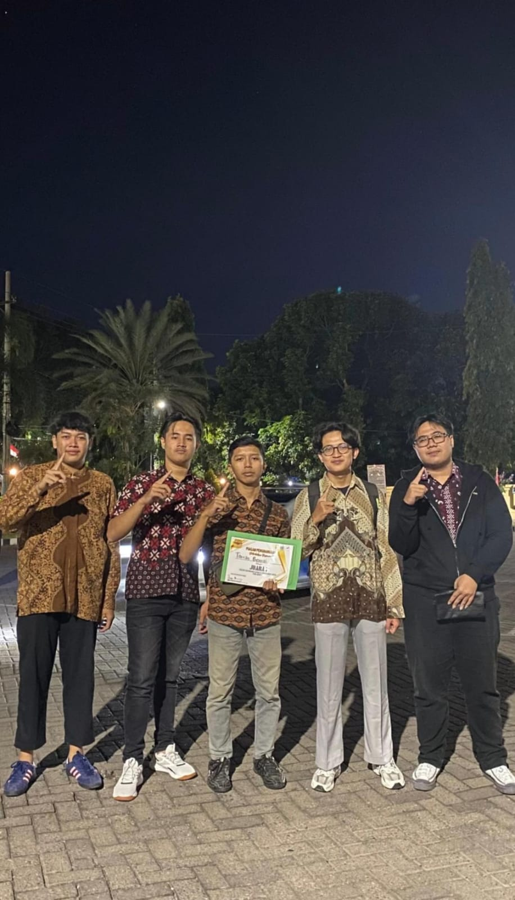

Biodata Alan
Nama: Alan
Umur: 20 tahun
Asal: Jember
TTL: Jember 17 November 2005
Hobi: Tidur, Foto Kucing, Gaming
 

Prestasi Selama Perkuliahan
Juara 3 PMCC 2023
Juara 1 PMCC 2024
Juara 2 Forkafest 4.0 2024
Juara 1 Kualifikasi Kapolda Jatim Wilayah Situbondo 2024